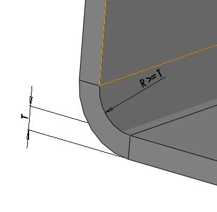

板金部品における曲げ半径を板厚で割った比率は、ユーザーが指定した値以上である必要があります。
最小曲げ半径は、加工対象材料の柔軟性および板厚に依存します。最小曲げ半径の要求値は、用途および材料によって異なる場合があります。
航空宇宙や宇宙用途では、要求値がより高くなる場合があります。推奨値よりも半径が小さい場合、軟質材料では材料流動の問題が発生し、硬質材料では破断が生じる可能性があります。そのような場合、局所的なくびれ（ネッキング）や破断が発生することもあります。
一般的な目安として、最小曲げ半径は少なくとも板厚と同等以上であるべきです。焼なましされた金属の多くは、板厚と同じ半径まで曲げることができます。一方、より軟らかい金属の中には、内側半径を板厚の 1/2 まで曲げられるものもあります。曲げ半径の長さが短いと、最小曲げ半径は小さくなります。
材料およびその硬さに基づき、最小曲げ半径と板金板厚の比率について異なる値を推奨します。
曲げ半径と板厚の比率（Bend Radius to Thickness）の値を、適切に設定してください。
さらに、ユーザーは 材料データベース（Materials Database） の製造材料を使用して、表示される一覧から特定の材料に基づいて比率を選択することもできます。
ルールを実行する際は、入力選択（Input Selection）ダイアログボックスで、部品に対して表示される製造材料の一覧から任意の材料を選択してください。
選択した材料に対して曲げ半径と板厚の比率が設定されていない場合、デフォルト値が部品解析に使用されます。
材料ごとに設定した値は、硬質材料条件に適用されます：
材料 |
曲げ半径と板厚の比率 |
アルミニウム合金 |
6.0 |
ベリリウム銅 |
4.0 |
低鉛黄銅 |
2.0 |
マグネシウム |
13.0 |
オーステナイト系ステンレス |
6.0 |
低炭素・低合金鋼 |
4.0 |
チタン |
3.0 |
チタン合金 |
4.0 |

ここでは、
R = 曲げ半径
T = シート厚さ